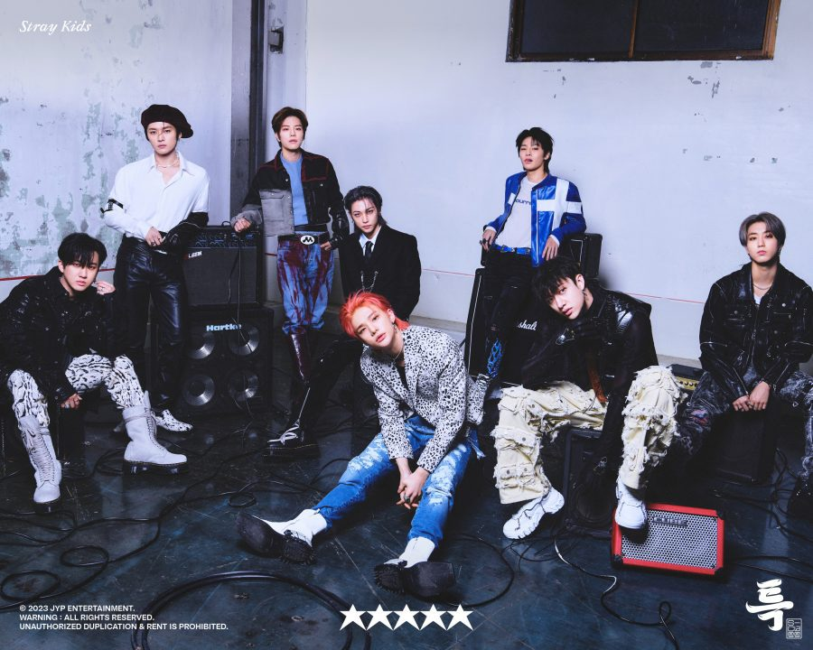
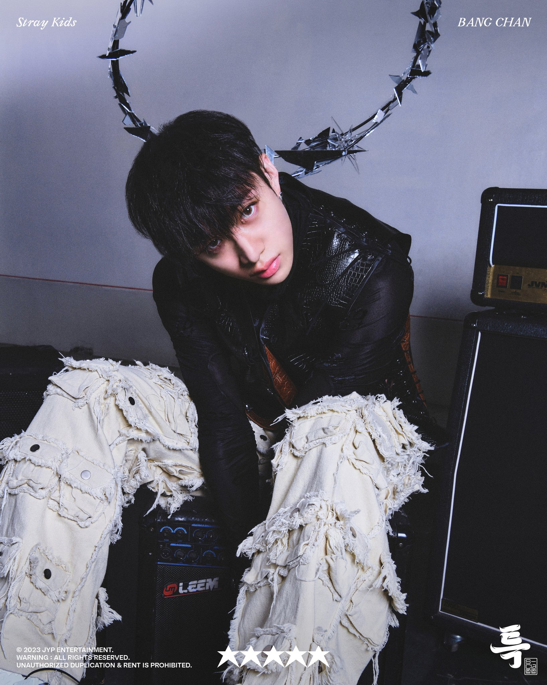
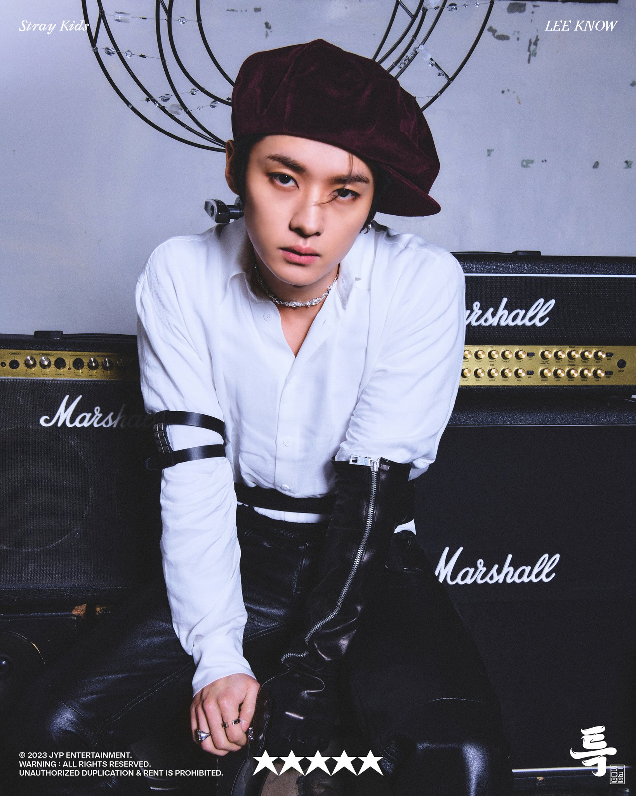
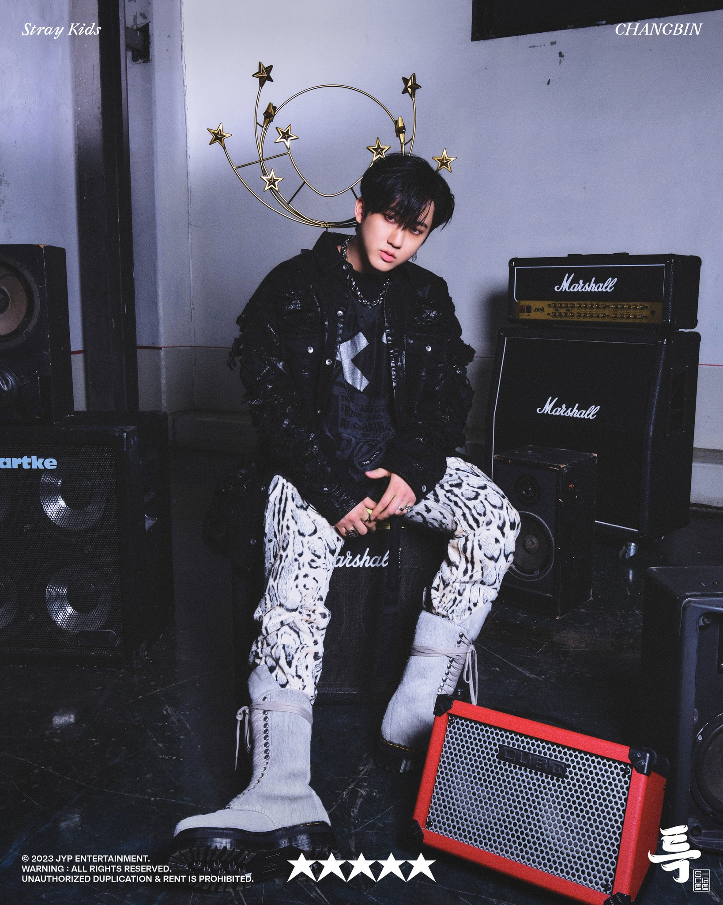
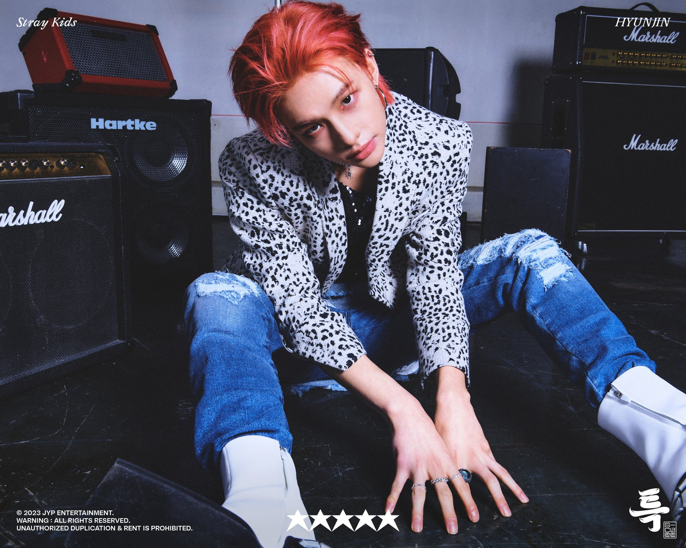
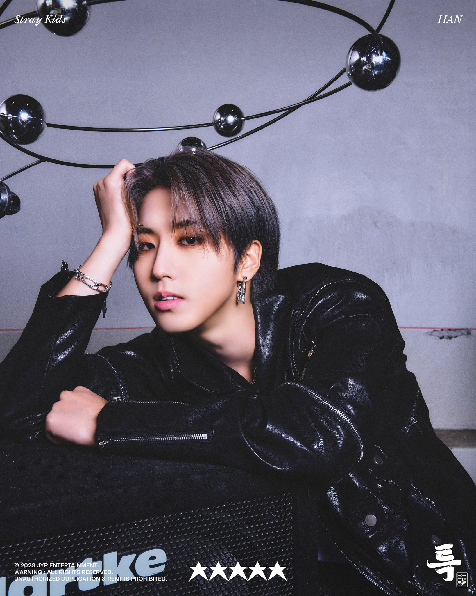
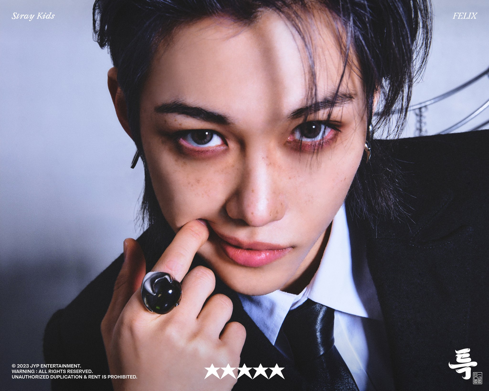
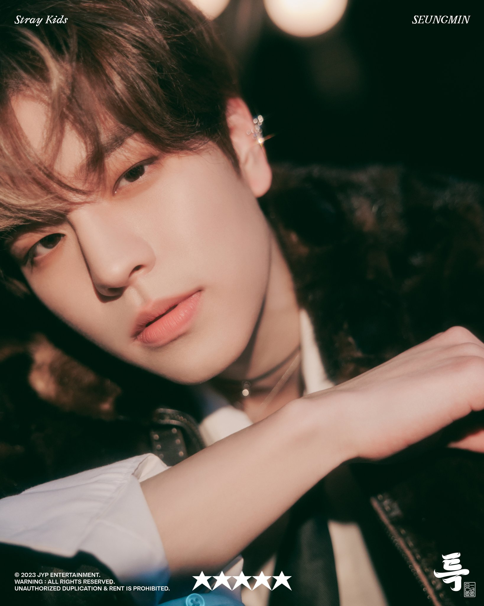
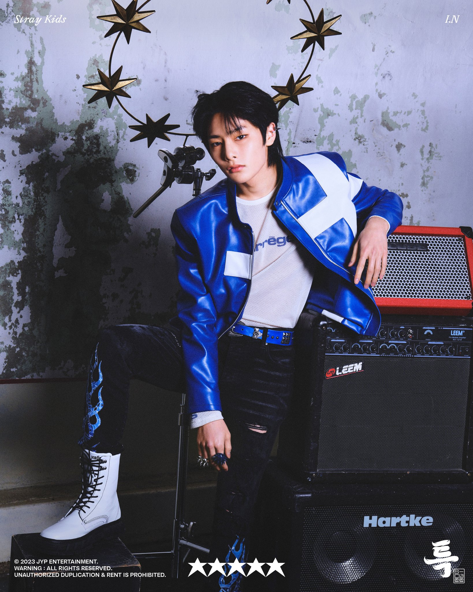

Stray Kids is an 8-member K-Pop group consisting of Bang Chan, Lee Know, Changbin, Hyunjin, Han, Felix, Seungmin, and I.N. They debuted originally as a 9-member group on March 25 2018 under JYP Entertainment.
Fandom name: Stay
Official Fan Colours: -
| Wesbite | straykids.jype.com |
|---|---|
| Website(Japan) | straykidsjapan.com |
| JYPEStrayKids | |
| @Stray_Kids / @stay_support | |
| Twitter(Japan) | @Stray_Kids_JP |
| @realstraykids | |
| Instagram(Japan) | @straykids_official_jp |
| Youtube | Stray Kids |
| Youtube(Japan) | Stray Kids Japan |
| TikTok | @jypestraykids |
| TikTok(Japan) | @straykids_japan |

| Stage Name | Bang Chan (방찬) |
|---|---|
| Birth Name | Christopher Bang |
| Korean Name | Bang Chan (방찬) |
| Position | Leader, Producer, Vocalist, Dancer, Rapper |
| Birthday | October 3, 1997 |
| Zodiac Sign | Libra |
| Height | 171cm (5'7") |
| MBTI Type | ENFJ-T |
| Representative Animal | Wolf |
| Unit | 3RACHA |
– Born in South Korea, but he moved to Sydney, Australia when he was very young.
– He has one younger sister (Hannah) and one younger brother (Lucas).
– His nicknames given by his members: Kangaroo and Koala.
– He speaks English, Korean, Japanese, and a bit of Chinese.
– He can play the guitar and the piano.
– His favorite season is autumn. (Summer Vacation VLive)
– He helps his members with producing songs.
– Bang Chan is friends with GOT7‘s BamBam and Yugyeom.
– He used to train with GOT7, TWICE, and DAY6.
– His role models are Drake, Cristiano Ronaldo, and his dad.
– He has a dog named Berry.
– If he wasn’t in Stray Kids, he would be a kangaroo, actor, or athlete. (VLive 180424)
– His motto: “Just enjoy~”

| Stage Name | Lee Know (리노) |
|---|---|
| Birth Name | Lee Min Ho (이민호) |
| Position | Dancer, Vocalist, Rapper |
| Birthday | October 25, 1998 |
| Zodiac Sign | Scorpio |
| Height | 172cm(5'8") |
| MBTI Type | ISFP (His previous result was ESFJ) |
| Representative Animal | Rabbit |
| Unit | Dance Racha |
– Born in Gimpo, South Korea.
– He is an only child.
– Lee Know is ambidextrous.
– He has a unique and fun personality, a 4D personality.
– His favorite color is mint. (Ceci Korea)
– Lee Know’s favorite song is 2PM‘s “10 out of 10“.
– His role model is 2PM‘s Taecyeon.
– His frequent habit is cracking his fingers.
– He has a fear of heights. (The 9th Ep 2)
– Lee Know really likes to read and his favorite author is currently Keigo Higashino.
– He has 3 cats named Sooni, Doongi, and Dori.
– If he wasn’t in Stray Kids, he would be a dancer. (VLive 180424)
– His motto: “Let’s eat well and live well.”

| Stage Name | Changbin (창빈) |
|---|---|
| Birth Name | Seo Chang Bin (서창빈) |
| Position | Rapper, Vocalist, Producer |
| Birthday | August 11, 1999 |
| Zodiac Sign | Leo |
| Height | 167cm(5'6") |
| MBTI Type | ESFP (His previous results were ENFP -> ESTP) |
| Representative Animal | Pabbit (Pig + Rabbit) |
| Unit | 3RACHA |
– Born in Yongin, South Korea.
– He has an older sister.
– His nickname given by his members: Mogi (mosquito), Jingjingie (whiny), Teokjaengie (chin), and Binnie.
– His specialties are writing lyrics and rap.
– He helps with producing songs.
– His favorite season is autumn. (Summer Vacation VLive)
– Changbin’s role models are BIGBANG‘s G-Dragon, Kendrick Lamar, as well as his mother and father.
– He can’t sleep without his Munchlax plush toy, which he calls Gyu.
– If he wasn’t in Stray Kids, he would be a producer, writer, or maybe tattoo master. (vLive 180424)
– His motto: “Let’s live with a positive mind, enjoy life.”

| Stage Name | Hyunjin (현진) |
|---|---|
| Birth Name | Hwang Hyun Jin (황현진) |
| Position | Dancer, Rapper, Vocalist, Visual |
| Birthday | March 20, 2000 |
| Zodiac Sign | Pisces |
| Height | 179 cm(5'10.5") |
| MBTI Type | INFP (His previous result was ENTP-T) |
| Representative Animal | Ferret |
| Unit | Dance Racha |
– He was born in Seoul, South Korea.
– He is an only child.
– Hyunjin’s English name is Sam Hwang.
– He can speak basic English.
– His nicknames are Jinnie and The Prince.
– Hobbies: dancing, reading books, and playing sports.
– Hyunjin’s favorite colours are black and white. (vLive)
– His role model is GOT7‘s Jinyoung.
– Hyunjin is allergic to cat fur. (vLive)
– If he wasn’t in Stray Kids, he would be an interior designer. (vLive 180424)
– He talks in his sleep and is the hardest to wake up.
– His motto: “Let’s try even when you regret it later.”

| Stage Name | Han (한) |
|---|---|
| Birth Name | Han Ji Sung (한지성) |
| English Name | Peter Han |
| Position | Rapper, Vocalist, Producer |
| Birthday | September 14, 2000 |
| Zodiac Sign | Virgo |
| Height | 169 cm(5'7") |
| MBTI Type | ISTP |
| Representative Animal | Quokka |
| Unit | 3RACHA |
– Born in Incheon, South Korea.
– He has one older brother.
– His nickname given by his members: Squirrel.
– He speaks English.
– His hobby is to eat cheesecake while watching a movie.
– Han’s favorite color is red.
– His special ability is a voice impression of Doraemon.
– Han has trypophobia (fear of clusters of small holes).
– His role model is Block B‘s Zico.
– If he wasn’t in Stray Kids, he would be a producer. (vLive 180424)
– His motto: “This too, shall pass.”

| Stage Name | Felix (필릭스) |
|---|---|
| Birth Name | Felix Lee (이 필릭스) |
| Korean Name | Lee Yong Bok (이용복) |
| Position | Dancer, Rapper, Vocalist |
| Birthday | September 15, 2000 |
| Zodiac Sign | Virgo |
| Height | 171 cm(5'7") |
| MBTI Type | ESFJ (His previous results were ENFP -> ENFJ) |
| Representative Animal | Chick |
| Unit | Dance Racha |
– His parents are Korean, but he was born in Seven Hills, a suburb of Sydney, Australia.
– He has an older sister (Rachel/Jisue Lee) and a younger sister (Olivia Lee).
– His nicknames given by his members: Bbijikseu, Bbajikseu, Bbujikseu, and Jikseu.
– Hobbies: Listening to music, dancing, shopping (especially clothes), traveling, and beatboxing.
– His favorite seasons are autumn and winter. (Summer Vacation VLive)
– His favorite sport is soccer.
– His role model is BIGBANG‘s G-Dragon.
– Felix’s favorite color is black and his favorite number is 7. (vLive)
– If he wasn’t in Stray Kids, he would be a songwriter. (vLive 180424)
– His motto: “Just a little braver~”

| Stage Name | Seungmin (승민) |
|---|---|
| Birth Name | Kim Seung Min (김승민) |
| Position | Vocalist |
| Birthday | September 22, 2000 |
| Zodiac Sign | Virgo |
| Height | 178 cm(5'10") |
| MBTI Type | ESFJ (His previous results were ESFJ -> ISFJ) |
| Representative Animal | Dog |
| Unit | Vocal Racha |
– Born in Seoul, South Korea.
– He has one older sister.
– He graduated from Cheongdam High School. (SK-Talk Time 180422)
– His nickname given by his members: Snail; his nickname given by fans: Sunshine.
– He thinks his most charming point is his chubby left cheek.
– His favorite season is autumn. (Summer Vacation vLive)
– His favorite food is eggs.
– He is the cleanest member.
– His role models are DAY6, Kim Dong-ryul, and Sandeul from B1A4.
– If he wasn’t in Stray Kids, he would be a photographer or a prosecutor. (vLive 180424)
– He is friends with AB6IX‘ Daehwi since high school.
– His motto: “Today you spent in vain is the day as tomorrow someone who passed away really wants to live through.”

| Stage Name | I.N (아이엔) |
|---|---|
| Birth Name | Yang Jeong In (양정인) |
| Position | Vocalist, Maknae |
| Birthday | February 8, 2001 |
| Zodiac Sign | Aquarius |
| Height | 172 cm(5'8") |
| MBTI Type | ISFJ (His previous results were ISFJ -> ESFJ) |
| Representative Animal | Fennec Fox |
| Unit | Vocal Racha |
– He was born in Busan, South Korea.
– He has an older brother and a younger brother who is 12 years old, as of 2018.
– His nicknames given by his members: Desert Fox, Our Maknae, Spoon Worm Yang, Fiona, and Bean Worm.
– His special ability is singing trot.
– I.N is a Catholic.
– He likes all foods besides beans.
– His favorite color is hot pink.
– His role model is Bruno Mars.
– If he wasn’t in Stray Kids, he would be a singer, or an elementary school teacher since he likes kids. (vLive 180424)
E = Extroverted, I = Introverted
N = Intuitive, S = Observant
T = Thinking, F = Feeling
P = Perceiving, J = Judging